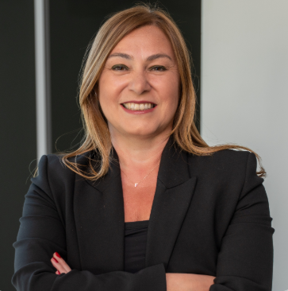

İnsan, Kültür ve Liderlik Dönüşümü Danışmanı, Eğitmeni, Koçu / İstanbul
AI Destekli Çevik Organizasyonlar ve Yetkinlik Gelişimi
İnsan, Kültür ve Liderlik dönüşümü alanında; üst yönetim ekiplerine stratejik danışmanlık sunan, organizasyonların daha çevik, uyumlu ve geleceğe hazır hale gelmesi için kültür, liderlik ve yetkinlik yapılarını yeniden tasarlamalarına destek olan Uluslararası Koçluk Federasyonu (ICF) PCC unvanına sahip danışman, koç ve mentor koçtur. 25 yılı aşkın Finans ve İnsan Kaynakları deneyimiyle; yapay zeka (AI) çağında organizasyonel dönüşüm, liderlik etkinliği ve çevik çalışma modelleri üzerine çalışmaktadır.

Uzmanlık Alanları
Yapay zeka, halihazırda organizasyon tasarımında büyük değişikliklere yol açıyor. 2026 yılında global düzeyde yapılan bir araştırmaya göre üst düzey yöneticilerin neredeyse tamamı (%99), yapay zekanın işlerin yerini alması nedeniyle önümüzdeki iki yıl içinde çalışan sayısında %20'ye varan azalma bekliyor. Bu bilgiler ışığında yeniden kurgulanan hizmetlerimiz:
Fonksiyonel organizasyonlardan çevik takımlara geçiş, geleneksel yaklaşımdan çevik (agile) yapılara geçiş için organizasyon değişikliklerinin kuruma özel tasarlanması. AI ile birlikte geleneksel rollerden çevik rollere geçiş için analiz ve norm kadro optimizasyonu.
Çevik kültürlerde yaygın OKR (Objective Key Result) sistemi için KPI'ların tüm şirket genelinde belirlenmesi. Kurum kültürüne göre OKR, balanced scorecard, yetkinlik ve hedef bazlı performans yönetim sisteminin kurulması.
Performans yönetim sisteminin sonuçlarına göre ve çevik yönetimi destekleyecek şekilde kısa ve uzun vadeli teşvik sistemlerinin piyasaya ve kuruma özgü tasarlanması ve kurulması.
Liderlik potansiyeli ölçümü için gerekli araçların tasarlanması, çevik kurum kültürüne ve yapay zekadaki gelişmelere paralel olarak yetenek yönetim sisteminin gözden geçirilmesi ve tasarlanması.
Yetenek yönetimi kapsamında iç ve/veya dış koçluk sistemlerinin kurgulanması ve uygulanması. ICF standartlarında bireysel ve grup koçluğu programlarının tasarımı.
Yetenek yönetimi kapsamında iç mentorluk sisteminin kurulması, kurumun ihtiyacına göre mentorluk ya da tersine mentorluk programlarının tasarlanması ve uygulanması.
Yapay zeka ile şekillenen işgücü piyasasına ve çevik kültüre adapte olacak İnsan Kaynakları departmanlarının kurulması ve/veya yapılandırılması.
Yapay zekadaki hızlı değişiklikleri, çevik kültürü ve yetenek yönetimi çıktılarını baz alan gelişim planlama süreçlerinin tasarlanması ve uygulanması.
Çevik kültüre uygun yetkinlik setinin ve buna paralel davranış göstergelerinin tanımlanması ve uyarlanması.
Çevik kültür dönüşümü için liderlik gelişim programları. Detaylı bilgi için www.narina.com.tr
Gelişim planlamalarına göre kritik yetenekleri elde tutmak ve bağlılığı artırmak üzere tasarlanan programlar. Detaylı bilgi için www.narina.com.tr
Hakkımda
Bilkent Üniversitesi İşletme Fakültesi'nden tam burslu mezun olduktan sonra kariyerime Akbank Teftiş Kurulu'nda başladım. Beş yıl bankacılık alanında çalıştıktan sonra İnsan Kaynakları ve Eğitim alanına geçtim.
25 yılı aşkın hem çok uluslu şirketlerde hem de Türkiye'nin önde gelen firmalarında çalıştım. Kariyerimin son döneminde Liberty Sigorta'da İK Direktörü ve İcra Kurulu üyesi olarak görev yaptım; M&A süreçlerinde aktif rol üstlendim.
2021 yılında Narina Eğitim ve Danışmanlık'ı kurarak bireyler ve kurumlara liderlik gelişimi konusunda koç, eğitmen ve danışman olarak hizmet vermeye başladım.
Kimlerle Çalışıyorum
Hem kurumsal müşterilere hem de bireysel profesyonellere özelleştirilmiş programlar sunuyorum.
SSS
İletişim
Kurum olarak hizmet almak istiyorsanız, e-posta atabilir ya da WhatsApp'tan iletişim kurabilirsiniz. İlk görüşme ücretsizdir.